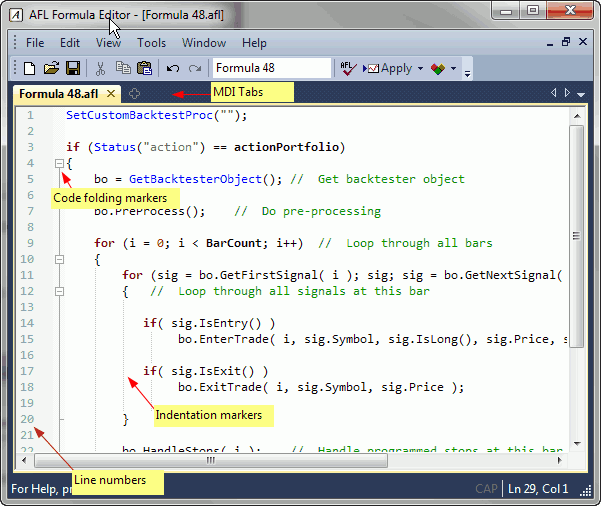
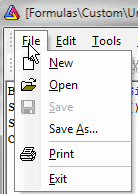
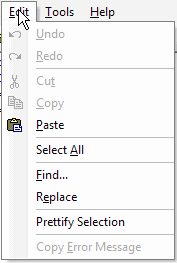
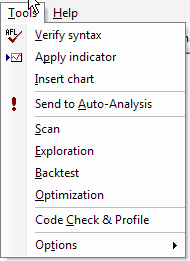
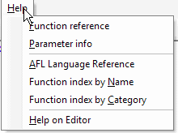
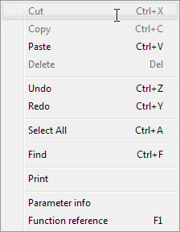

AFL Editor menu

The AFL editor features a separate menu consisting of the following choices:
1. File

where
- New - clears the formula editor window
- Open - opens the formula file
- Save - saves the formula under its current name
- Save As... - saves the formula under a new name
- Print - prints the formula
- Exit - closes the editor
2. Edit

where
- Undo - undoes recent action (multiple-level)
- Redo - redoes recent action (multiple-level)
- Cut - cuts the selection and copies it to the clipboard
- Copy - copies the selection to the clipboard
- Paste - pastes current clipboard content at the current cursor position
- Select All - selects the entire text in the editor
- Find... - provides access to a text search tool
- Copy Error Message - copies the current error message displayed at the bottom
of the editor window to the clipboard (this option is active only when errors are
displayed after a syntax check)
3. Tools

where
- Verify syntax - checks the current formula for errors
- Apply indicator - saves the formula and applies the current formula as a chart/indicator
once
- Insert chart - saves the formula and applies the current formula as a chart
many times (inserts multiple times)
- Send to Auto-Analysis - saves the formula and selects it as the current formula
in the Automatic Analysis window
- Scan - saves the formula and performs Scan in the Automatic Analysis window
- Exploration - saves the formula and performs Exploration in the Automatic Analysis
window
- Backtest - saves the formula and performs Backtest in the Automatic Analysis
window
- Optimization - saves the formula and performs Optimization in the Automatic
Analysis window
- Check - saves the formula and performs Check (if the given formula references
the future) in the Automatic
Analysis window
- Options: Auto-save formula before running analysis - when checked, any
click on the Scan/Explore/Backtest/Optimize button in the Automatic Analysis window
triggers an automatic save of the current formula.
4. Help

where
as well as a context menu (available via right-click over the formula):

which essentially duplicates the choices available from the regular menu.